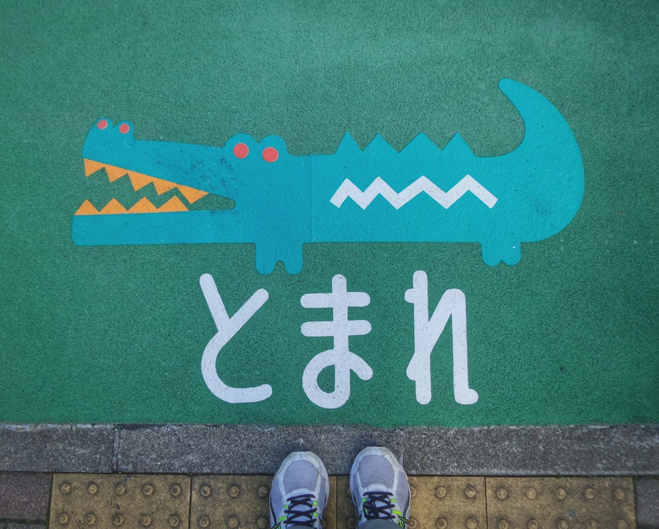
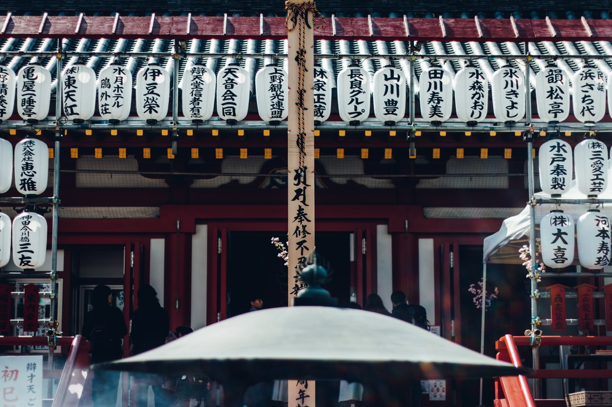

Good Times
Related posts
Advice for visitors to Japan
Keep an open mind. Japan will change your outlook should you be open to new insight and perspective.

When You Open Your Heart to Japan
Where I live in downtown Tokyo it’s been ‘build, build, build’ since the 2020 Summer Olympics announcement.

Ikigai: Uncover Your Reason to Get Up in the Morning
The Japanese philosophy of working your purpose, not just a job.
The Farewell
Chucks sentimentality and melodramatics out the window. It’s funny, bittersweet and full of unexpected left turns. —Rolling Stone
In this funny, uplifting tale based on an actual lie, Chinese-born, U.S.-raised Billi (Awkwafina) reluctantly returns to Changchun to find that, although the whole family knows their beloved matriarch, Nai Nai (grandma), has been given mere weeks to live, everyone has decided not to tell Nai Nai herself.